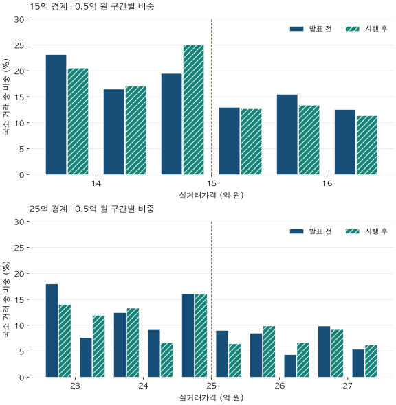

정책 경계와 거래 읽기 · 15억·25억 경계
15억·25억 아래로 아파트 거래가 몰렸을까? 대출 경계 전후 비교
2025년 10·15 대책 전후 84일의 실거래가격을 비교합니다. 15억·25억 아래 초과 비중, 둥근 가격·대조 경계 검사와 심사 시가의 차이를 통해 규제 효과로 단정할 수 없는 이유를 확인하세요.
분석 기간 · 2025년 7월 23일~2026년 1월 7일 중 비교 기간 | 보유 자료 스냅샷 생성 · 2026-10-04
15억 원을 조금 넘으면 대출 최대한도가 달라졌으니, 거래도 15억 원 바로 아래에 몰렸을까요? 25억 원에서는 같은 일이 있었을까요? 2025년 10·15 대책의 발표 전후를 고정해, 서울·수집 경기 지역의 실거래가격 분포를 다시 계산했습니다.
15억·25억은 계약서의 가격만으로 나누는 경계인가요?
금융위원회의 2025년 10월 15일 발표는 수도권·규제지역의 주택구입목적 주담대 최대한도를 시가에 따라 나누고, 10월 16일부터 시행한다고 설명했습니다. 시가 15억 이하 6억, 15억 초과~25억 이하 4억, 25억 초과 2억 원의 구분입니다. 정확히 15억·25억인 값은 각각 아래 구간에 들어갑니다. 이 금액은 다른 심사를 거친 개인에게 보장된 대출액이 아닙니다.
당시 공식 FAQ 3-2와 7-1에 따르면 주택가격은 대출 신청일의 공신력 있는 평가자료 등을 활용해 판단하며, 시행 전 신청접수나 계약·계약금 납부 등에 관한 경과규정도 있습니다. 따라서 실거래가가 14.9억이라는 이유만으로 6억 대출 대상이라고 판정할 수 없습니다. 이 글은 당시 규칙을 배경으로 거래 분포를 살펴보는 회고 분석이며, 현재 상품별 한도 안내가 아닙니다.
공개 실거래자료에는 실제 대출 신청일·대출 유무·심사 시가·소득과 부채·계약금 납부 증빙이 없습니다. 여기서는 실거래가격이 같은 숫자 주변에서 어떻게 분포했는지만 비교합니다. 가격 종류의 차이는 실거래가·호가·KB시세의 구분에서 더 설명합니다.
어느 거래와 기간을 비교했나요?
- 지역·주택:서울 25개 구와 프로젝트가 수집한 경기 36개 시·구의 정제된 적격 아파트 매매입니다. 면적을 84㎡로 제한하지 않았습니다. 인천을 포함한 수도권 전체 결과는 아닙니다.
- 발표 전 84일:2025년 7월 23일~10월 14일입니다. 발표일인 10월 15일을 이 기간에 넣지 않았습니다.
- 시행 후 84일:2025년 10월 16일~2026년 1월 7일입니다. 시행 후 전체 역사나 규제 종료 후 기간을 뜻하지 않습니다.
- 가격 범위:주 비교는 각 경계의 ±10%입니다. 15억은 13.5억 초과~16.5억 이하, 25억은 22.5억 초과~27.5억 이하입니다.
모든 날짜는 계약일 기준입니다. 발표일의 반응을 이미 정책이 없는 시기에 넣거나, 거래 신고일을 계약일로 바꾸지 않았습니다. 자료 수집 이력의 60일 성숙 조건을 확인한 기간만 주 추정에 사용했습니다. 이는 정정이 영원히 없다는 뜻이나 당시 실시간으로 알 수 있었던 자료라는 뜻은 아닙니다.
실제로 경계 주변 분포는 어떻게 달라졌나요?

그림의 16개 가격 구간과 거래 건수 펼치기
| 실거래가격 구간 | 발표 전 건수 | 발표 전 비중 | 시행 후 건수 | 시행 후 비중 |
|---|---|---|---|---|
| 13.5 초과~14 이하 | 694 | 23.12 | 333 | 20.52 |
| 14 초과~14.5 이하 | 494 | 16.46 | 277 | 17.07 |
| 14.5 초과~15 이하 | 585 | 19.49 | 406 | 25.02 |
| 15 초과~15.5 이하 | 389 | 12.96 | 206 | 12.69 |
| 15.5 초과~16 이하 | 464 | 15.46 | 217 | 13.37 |
| 16 초과~16.5 이하 | 376 | 12.52 | 184 | 11.34 |
| 22.5 초과~23 이하 | 104 | 17.93 | 61 | 13.96 |
| 23 초과~23.5 이하 | 44 | 7.59 | 52 | 11.90 |
| 23.5 초과~24 이하 | 72 | 12.41 | 58 | 13.27 |
| 24 초과~24.5 이하 | 53 | 9.14 | 29 | 6.64 |
| 24.5 초과~25 이하 | 93 | 16.03 | 70 | 16.02 |
| 25 초과~25.5 이하 | 52 | 8.97 | 28 | 6.41 |
| 25.5 초과~26 이하 | 49 | 8.45 | 43 | 9.84 |
| 26 초과~26.5 이하 | 25 | 4.31 | 29 | 6.64 |
| 26.5 초과~27 이하 | 57 | 9.83 | 40 | 9.15 |
| 27 초과~27.5 이하 | 31 | 5.34 | 27 | 6.18 |
15억 주변 거래는 3,002건에서 1,623건, 25억 주변은 580건에서 437건으로 줄었습니다. 두 기간이 같은 84일이어도 거래 총량이 다르므로 건수와 비중을 구분해야 합니다. 비중 증가가 거래 건수 증가를 뜻하지는 않습니다.
‘경계 아래 초과 비중’은 무엇을 뺀 숫자인가요?
먼저 경계 주변 ±10%의 가격 격자를 만들고, 경계에 가까운 ±2% 부분을 빼고 나머지 거래 건수에 완만한 2차 곡선을 맞춥니다. 이 곡선을 ‘경계에서 특별한 굴곡이 없다고 가정한 비교선’으로 사용합니다. 시장의 실제 정답이나 관측되지 않은 무규제 시장을 복원한 선은 아닙니다.
아래 초과 비중 = (경계 아래 2% 구간의 관측 건수−비교선의 기대 건수)÷전체 국소 거래 건수입니다. 15억에서는 14.7억 초과~15억 이하가 해당합니다. 시행 후 관측 322건에서 비교선 약 151.48건을 빼고 전체 1,623건으로 나누면 10.51%입니다. 이는 ‘거래의 10.51%가 정확히 15억에 체결됐다’는 뜻과 다릅니다.
‘위 부족 비중’은 경계 위 2% 구간에서 반대로 기대 건수−관측 건수를 같은 분모로 나눕니다. 값이 음수면 부족이 아니라 비교선보다 많은 거래입니다. 아래가 늘어났다고 위쪽의 부족도 반드시 커지지는 않습니다.
| 경계·기간 | 국소 거래 | 거래가 있는 지역 수 | 아래 초과 비중 | 위 부족 비중 | 정확히 경계 가격 |
|---|---|---|---|---|---|
| 15억 · 발표 전 | 3,002 | 38 | 5.61 | 3.50 | 196 (6.53%) |
| 15억 · 시행 후 | 1,623 | 41 | 10.51 | 3.13 | 135 (8.32%) |
| 25억 · 발표 전 | 580 | 19 | 6.80 | -0.34 | 50 (8.62%) |
| 25억 · 시행 후 | 437 | 16 | 6.42 | 2.76 | 36 (8.24%) |
정확히 15억에 체결된 거래는 196건→135건으로 줄었지만 국소 비중은 6.53%→8.32%로 높아졌습니다. 15억 아래 초과 비중과 이 ‘정확 경계 비중’은 다른 통계입니다. 25억도 정확 경계 50건→36건과 초과 비중을 따로 읽어야 합니다.
| 경계 | 아래 초과 변화 | 아래 변화 구간 | 위 부족 변화 | 위 변화 구간 |
|---|---|---|---|---|
| 15억 | +4.89 | +1.76 ~ +8.03 | -0.38 | -2.53 ~ +1.78 |
| 25억 | -0.38 | 미지원 | +3.10 | 미지원 |
15억 아래 초과 변화의 근사 구간은 +1.76~+8.03%p입니다. 위 부족 변화의 구간은 0을 포함합니다. 25억은 필요한 20개 지역 군집에 못 미쳐 구간을 제공하지 않습니다. 이는 변화가 없다는 증명이 아니라 불확실성을 그 방식으로 평가할 지원이 부족하다는 뜻입니다. 이 구간이 정책의 인과효과를 보증하지도 않습니다.
둥근 가격 선호와 다른 기준선은 확인했나요?
거래가격은 연속적인 숫자처럼 보이지만 천만 원·억 원 단위로 자주 맞춰집니다. 15억 주변의 천만 원 배수 거래는 발표 전 76.18%, 시행 후 76.89%입니다. 단순히 15억에 봉우리가 있다는 이유만으로 규제 반응이라고 부르면 평소의 반올림 선호를 포함할 수 있습니다.
천만 원 배수 거래를 제외하고 같은 추정을 하면 15억 아래 초과 비중은 8.99%→13.16%, +4.18%p입니다. 방향은 유지되지만 다른 선택 표본이며, 이것만으로 모든 둥근 가격 효과를 제거한 것은 아닙니다. 25억의 해당 제외 표본은 57건·50건이라 추정 지원이 부족합니다. 25억의 배수별 건수는 작은 잔여 셀의 역산을 막기 위해 공개하지 않습니다.
같은 억 단위의 다른 경계도 비교했습니다. 비교선이 15억·25억의 중심 구간을 침범하지 않도록 기존 규칙으로 바깥쪽 대조 경계를 정했으며 결과가 좋은 경계를 골라내지 않았습니다.
| 대조 경계 | 발표 전 / 시행 후 건수 | 시행 후−발표 전 |
|---|---|---|
| 15억 비교 · 13억 | 3,824 / 2,236 | +1.82 |
| 15억 비교 · 17억 | 2,288 / 1,254 | +2.68 |
| 25억 비교 · 21억 | 1,146 / 744 | -2.70 |
| 25억 비교 · 29억 | 355 / 384 | +1.39 |
13억·17억도 각각 +1.82·+2.68%p 증가했습니다. 15억의 증가가 더 크다는 점은 관측되지만, 이 차이만으로 15억 규칙에 고유한 인과 반응을 입증하지는 못합니다. 21억과29억은 방향도 다릅니다. 주변 가격 분포 자체가 움직일 수 있다는 반론을 남겨야 합니다.
가격폭을 ±5/10/20%로 바꾸면 15억의 84일 아래 초과 변화는 +6.83/+4.89/+2.35%p입니다. 비교 곡선을 1차·3차로 바꿔도 이 사례의 방향은 유지됐습니다. 다만 구간을 넓힐수록 분모와 비교선이 함께 바뀌므로 크기가 같을 이유는 없습니다.
28·84·168일과 세 가격폭의 전체 민감도 펼치기
| 경계·기간·가격폭 | 시행 후−발표 전 | 지원 상태 |
|---|---|---|
| 15억 · 28일 · ±5% | 미지원 | 가격·거래 지원 부족 |
| 15억 · 28일 · ±10% | +3.55 | 관측 비교 |
| 15억 · 28일 · ±20% | +1.54 | 관측 비교 |
| 15억 · 84일 · ±5% | +6.83 | 관측 비교 |
| 15억 · 84일 · ±10% | +4.89 | 관측 비교 |
| 15억 · 84일 · ±20% | +2.35 | 관측 비교 |
| 15억 · 168일 · ±5% | 미지원 | 원천 성숙 또는 기간 미확인 |
| 15억 · 168일 · ±10% | 미지원 | 원천 성숙 또는 기간 미확인 |
| 15억 · 168일 · ±20% | 미지원 | 원천 성숙 또는 기간 미확인 |
| 25억 · 28일 · ±5% | 미지원 | 가격·거래 지원 부족 |
| 25억 · 28일 · ±10% | -1.30 | 관측 비교 |
| 25억 · 28일 · ±20% | -0.15 | 관측 비교 |
| 25억 · 84일 · ±5% | 미지원 | 가격·거래 지원 부족 |
| 25억 · 84일 · ±10% | -0.38 | 관측 비교 |
| 25억 · 84일 · ±20% | -0.09 | 관측 비교 |
| 25억 · 168일 · ±5% | 미지원 | 원천 성숙 또는 기간 미확인 |
| 25억 · 168일 · ±10% | 미지원 | 원천 성숙 또는 기간 미확인 |
| 25억 · 168일 · ±20% | 미지원 | 원천 성숙 또는 기간 미확인 |
발표 전에 가짜 시행일을 놓은 검사도 했습니다. 15억의 28일씩 비교는 2025년 9월 17일을 가짜 경계로 놓았을 때 +2.78%p, 근사 구간 −1.94~+7.50%p입니다. 원래 정책이 시행되기 전에도 분포가 움직일 수 있습니다. 84일 가짜 날짜 비교와 168일 전후 비교는 과거 원천의 수집 시점 검증이 부족하고, 25억의 28일 가짜 날짜는 표본이 부족합니다. 이를 ‘대조 검사를 통과했다’거나 변화 0으로 채우지 않았습니다.
그래도 15억 규제가 거래를 끌어당겼다는 해석이 가장 자연스럽지 않나요?
가장 설득력 있는 반론입니다. 당시 제도에 불연속적인 최대한도가 있었고, 15억 아래의 관측 초과 비중이 커졌으며 일부 민감도에서도 방향이 유지됐습니다. 이는 더 조사할 만한 경계 주변 변화라는 해석을 뒷받침합니다.
그러나 같은 시기에 규제지역·LTV·스트레스 DSR·토지거래허가 관련 환경도 함께 바뀌었습니다. 이 자료 범위에는 해당 수도권 대출 상한의 영향을 받지 않는 깨끗한 매칭 대조군이 없습니다. 거래 지역·면적·주택 상태와 매수자의 현금 비중도 달라질 수 있습니다. 안정된 적용 지역만 남긴 민감도가 주 결과와 같아도 이 문제들을 없애지는 못합니다.
특히 관측 축은 계약가격이고 실제 규칙의 축은 심사 시가입니다. 차주별 대출 이용과 경과규정 적용도 알 수 없습니다. 그러므로 가격을 일부러 낮췄다거나 거래를 조작했다는 의도, 정책의 성공·실패, 인과적 가격 효과는 이 결과로 판단하지 않습니다. 15억의 결과를 표본이 적고 반응도 다른25억이나 다른 지역·정책 시기에 옮겨 붙이지 않습니다.
내 후보가 경계 근처라면 무엇을 확인해야 할까요?
- 가격 숫자의 종류와 날짜를 적습니다.매물 호가, 실제 계약가격, 금융기관이 확인하는 평가자료를 구별합니다.
- 대출 조건을 별도로 확인합니다.신청 시점·상품·소득/부채·경과규정 증빙을 실제 취급기관에서 확인한 뒤 자금표에 옮깁니다.
- 거래 그래프의 분모를 확인합니다.가격 구간·지역·기간·거래 건수와 미지원 칸을 함께 읽습니다. 전체 서울의 가격대 비중과 국소 경계 몰림은 다른 질문입니다.
서울의 가격대별 거래 비중은 시장 전체 구성을, 갈아타기 차액과 추가 현금은 내 두 후보의 자금 구분을 다룹니다.
원천·모형·공개 기준과 재현 검증 펼치기
- 모집단:국토교통부 매매 상세자료의 기존 정제 정책 적격 매매를 사용했습니다. 정정·중복을 처리하고 알려진 해제·직거래를 제외한 canonical sale_benchmark_eligible입니다. 초기 미상 신고항목은 기존 정제 가정을 유지하며, 다른 글의 관측 가격 분포와 모집단이 자동으로 같지는 않습니다.
- 시간:기존 정책 분석의 관측 종료는2026년6월입니다. 이 글의 주 비교 끝은2026년1월7일입니다. 현행 원천으로 계산한 회고이며 당시 이용 가능했던 빈티지를 복원한 결과가 아닙니다. 각 기간이 닿는 모든 지역·월에 수집 이력 기반60일 성숙 조건을 적용했습니다. 규칙의2026년7월1일 검증 경계는 법적 폐지일이 아닙니다.
- 모형·분모:100만 원 오른쪽 닫힌 격자에서 중심±2%를 제외한2차 최소제곱 곡선과 비교했습니다. 정확 경계는 아래쪽입니다. 아래 초과·위 부족은 전체±10%국소 거래를 분모로 하며 음수를0으로 자르지 않습니다. 반올림 선호를 포함한 모형 의존적 진단입니다.
- 지원·불확실성:국소200건·양쪽 고유가격각20개와 중심/바깥 구간 지원을 요구합니다. 지역 군집20개 이상일 때 고정399회 공동 재표집, 유한 군집 보정과 t 기준으로 근사 구간을 계산합니다. 연속 가격변수의 표준 불연속 검정이나 거래별 독립 오차가 아닙니다.
- 공개:공개 건수는0또는10이상이고 작은 잔여를 역산할 수 있는 분할도 숨깁니다. 그림은 공개 가능한0.5억 원 구간만 사용합니다. 개별 거래·단지 식별자·원천 자료는 공개하지 않습니다. 반올림 전 집계JSON에 주 비교와 미지원 민감도를 함께 담았습니다.
- 검증:현재 입력·생성코드·기존 독립 검증코드와 정확한 집계 파일의 식별값이 모두 일치하는지 확인했습니다. 이어 두 경계의52개 기간/대조 조건을 재계산하고, 정책 어댑터의 거래 집합과 직접 SQL관측 집합을 대조했습니다. 이는 동일 원천의 재현 확인이며 외부 원천의 오류까지 배제하지 않습니다.
계산·분석·집필:파파펭귄 (Nobot Kang). 에이전트로 원문 확인·재계산·초안 검토를 보조했습니다. 정책 원문 재확인일:2026-10-10. 기존에 사전 고정하고 검증한 설계와 결과를 재현했으며, 이번 글을 쓰며 처음 발견한 검정이라고 주장하지 않습니다.